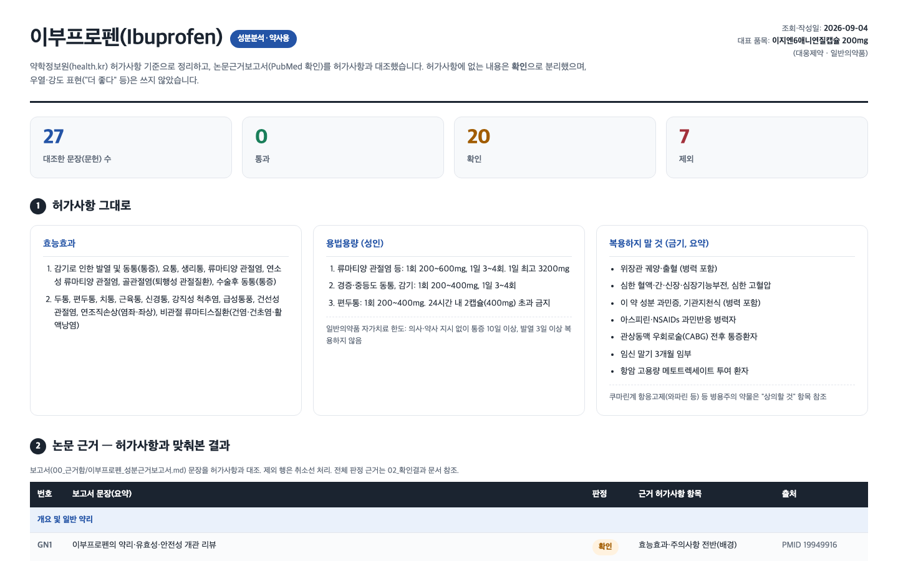

2026
AI,
어디까지
신뢰하시나요?
근거 → 기준 → 검증 → 결과물 → 확장
파마브로스 심포지엄
01
사례 · 카운터에서 매일 듣는 말
사례 · 카운터의 질문 하나
🤧손님
비염약 하나 주세요.
오늘 운전해야 해서 안 졸린 걸로요.
오늘 운전해야 해서 안 졸린 걸로요.
후보 셋셋 다 “안 졸린 약”
지르텍정
클라리틴정
알레그라정120mg
그런데손님마다 답이 다르다
😴졸음
🚗운전
👶나이
판단은 약사님의 몫 · 근거는 흩어져 있다
파마브로스 심포지엄
02
사례 · 그냥 물어보면 · 실측 2026-09-08 · ChatGPT · 화면 재현
AI에게 그냥 물어보면
ChatGPTchatgpt.com · 2026-09-08 · 원문 그대로
비염약 중에 안 졸린 약 알려줘
네. 비염약 먹고 졸리는 게 싫다면 2세대 항히스타민제 쪽을 우선 고려하면 됩니다.
· 펙소페나딘 — 졸림이 적은 편이라 낮에 활동하거나 운전해야 할 때 흔히 선호합니다.
· 로라타딘 — 비교적 졸림이 적은 편입니다. …
아이한테도 괜찮아? 6살인데
네. 6살이면 소아용으로 허가된 항히스타민제가 있습니다. 다만 성인용 알약을 그대로 반으로 잘라 먹이는 식으로 결정하면 안 됩니다.
특히 제가 앞에서 말씀드린 것 중에서는 펙소페나딘이 6~11세 어린이의 알레르기 비염에 사용될 수 있고, 졸림이 비교적 적은 성분입니다. 6~11세 대상 임상시험에서도 효과와 안전성이 확인되어 있습니다. 📎 DailyMed +1
6살 아이에게는 · 펙소페나딘: 소아용 제형/용량을 확인해서 사용 · 시럽 형태도 있어 어린아이가 먹기 편한 제품이 있음 …
🤔이 답변, 신뢰하실 수 있으신가요?
파마브로스 심포지엄
03
근거 찾기 · 논문 (PubMed) · AI
근거 찾기 · 검증할 수 있게 가져오기
🔍PubMed 검색
→
🔖논문 번호
→
🧾성분 · 용량 · 대상
🧾 실제로 가져온 문장
“펙소페나딘은 영유아에서도 안전성이 확인됐다”
🔖 PMID 18219837🧾 펙소페나딘 15·30mg 1일 2회 · 6개월~2세
찾는 게 아니라, 검증할 수 있게 가져온다
파마브로스 심포지엄
04
근거 찾기 · 실측 결과 2026-09-04 · 함정 발견
결과 · 출처는 진짜, 답은 틀림
같은 약, 같은 대상💊 펙소페나딘 = 알레그라정120mg👶 영유아 ⊂ 12세 미만 소아
🤖AI
AI 문장 · PMID 18219837 (실제 논문)펙소페나딘은 영유아에서도
안전성 확인
안전성 확인
≠
허가사항 · 알레그라정120mg12세 미만 소아
안전성 미확립
안전성 미확립
📜식약처
사람 눈에는 안 걸리는 이유
✅
논문 번호 실제로 있음출처는 진짜
✅
문장은 멀쩡읽어서는 모른다
❌
국내 허가와 정반대용량도 국내 미허가
AI는 틀려도 자신 있게 말합니다
파마브로스 심포지엄
05
기준 가져오기 · 국내 허가사항 (약학정보원)
기준 가져오기 · 국내 허가사항
🔎
품목 확정
약학정보원
대표 1개
health.kr 검색
→
📜
허가사항
성분 · 효능 · 용법 · 주의
쓸 수 있는 말의 범위
식약처 허가
→
🧾
가져온 결과
알레그라정120mg
12세 미만 소아
안전성 · 유효성 미확립
안전성 · 유효성 미확립
실측 허가사항 파일 · 2026-09-04
검증의 잣대는 국내 허가사항
파마브로스 심포지엄
06
검증 · 근거 보고서 ↔ 허가사항
검증 · 대조 → 판정
📚
근거 보고서 · 문장
하나씩
🔖 논문 번호🧪 성분💊 용량👶 대상
31문장
→
⚖️
대조 · 두 겹
🔖 사실 · 논문이 실제로 있는가📜 맥락 · 허가와 맞는가
🧪 성분💊 용법👶 대상📝 표현
문장마다 · 두 겹 다
→
🗂️
판정
셋 중 하나
🟢 통과 · 허가에 같은 말🔵 출처 달아 사용 · 넷 다 맞음 제외 · 하나라도 어긋남
이유와 함께 확인표에
문장마다 대조 · 판정마다 이유
파마브로스 심포지엄
07
검증 · 판정 결과 · 확인표
검증 · 근거 × 기준 = 판정 31
📚근거 보고서 · 논문 21편
+
📜기준 · 국내 허가사항
=
🗂️확인표 · 31문장 판정
출처 달아 사용 21제외 9
통과 1출처 달아 사용 21제외 9
🔖사실 검증논문 번호 21편 · 전부 실제로 있음
📜맥락 검증허가와 일치하는가 · 9건 걸림
출처가 있어도, 허가와 맞아야 쓴다
파마브로스 심포지엄
08
오늘 예시 · 사이언스 → 코워크 → 카드 · 실측 2026-09-04 · 화면 재현
전체 흐름 · 한눈에
🔎 클로드 사이언스 · 프로젝트 상담카드~/pharmacy
지르텍정 · 클라리틴정 · 알레그라정120mg — 비염약 세 가지를 비교할 논문 근거를 찾아줘.
- 약마다 주성분의 효능과 주의사항을 논문에서 찾아줘.
- 실제로 있는 논문만 쓰고, 논문 번호(PMID)를 달아줘.
- 세 약을 직접 비교한 임상시험이 없으면 “없음”이라고 써줘.
- 결과는 md 보고서 파일 하나로 저장해줘.
✳ Searching PubMed for cetirizine loratadine fexofenadine✳ 보고서 정리 중
보고서를 저장했습니다 →
00_근거함/지르텍정_클라리틴정_알레그라정120mg_논문근거보고서.md1-1. 세티리진 (지르텍정)
· 소아 계절성 알레르기 비염 RCT(6~11세)에서 세티리진 10 mg군 TSSC가 위약 대비 유의하게 감소 (PMID: 28441993)
… 이런 문장 31개 · 논문 21편
· 소아 계절성 알레르기 비염 RCT(6~11세)에서 세티리진 10 mg군 TSSC가 위약 대비 유의하게 감소 (PMID: 28441993)
… 이런 문장 31개 · 논문 21편
📋 클로드 코워크 · Cowork 모드작업 폴더 pharmacy
지침_상담카드, 지르텍정 · 클라리틴정 · 알레그라정120mg
✳ 약학정보원 검색 · 품목 코드 확보 · 3품목✳ 허가사항 원문 가져오기 · 성분 · 효능 · 용법 · 주의
허가사항을 저장했습니다 →
01_허가사항/지르텍정_클라리틴정_알레그라정120mg_허가사항.md알레그라정120mg · 용법용량
· 성인 및 12세 이상 청소년: 1일 1회 120mg 식전 경구 투여. 12세 미만 어린이는 안전성·유효성 미확립.
→ 00_근거함의 논문근거보고서를 읽어 문장 31개를 하나씩 대조 ↓
· 성인 및 12세 이상 청소년: 1일 1회 120mg 식전 경구 투여. 12세 미만 어린이는 안전성·유효성 미확립.
→ 00_근거함의 논문근거보고서를 읽어 문장 31개를 하나씩 대조 ↓
↓↓
⚖️
대조 · 판정문장 31개 × 허가사항
🟢 통과 1🔵 출처 달아 사용 21 제외 9확인표
↓
📄
결과물 · 상담카드통과한 문장만 · PDF 1장
결정은 약사님
파마브로스 심포지엄
09
결과물 · 검증을 거친 카드 · 약사님의 검증
결과물 · 상담카드 → 결정은 약사님

약사님이 묻는 셋
💊제품이 맞는가
📜허가 표현과 같은가
🗣️상담에 써도 되는가
PDF 1장 · 사람 손 2번 (약 이름 · 마지막 확인)
카드는 결론이 아니라, 약사님의 검토 자료
파마브로스 심포지엄
10
확장 · 프로젝트 추가 + 지침 추가 · 실측 2026-09-04
확장 · 프로젝트 하나, 지침 하나 더
🔎사이언스 프로젝트 추가
+
📋코워크 지침 추가
=
🗂️새 결과물

성분분석표 웹 페이지 · 이부프로펜
추가한 것 둘 · 나머지는 그대로
🔎사이언스에 프로젝트 하나
📝코워크에 지침 하나 · 규칙은 약사님이
💬“지침_성분분석, 이부프로펜”
새 도구 없이, 지침 하나 더로 결과물 하나 더
파마브로스 심포지엄
11
구성 · 한 번만 → 다음부터 약 이름만 · 화면 재현
구성 · 세 걸음, 한 번만
두 AI 도구 → 같은 폴더
01
📋
코워크 새 채팅 + 폴더
Cowork 모드 · 작업 폴더 지정
클로드 코워크
오늘 어떤 도움을 드릴까요?
채팅Cowork📁 pharmacy ▾
📁 pharmacy ✓
＋ 새 프로젝트 생성
📂 폴더 추가
02
📝
지침 파일
폴더에 저장 · 약 이름만 비움
📝 지침_상담카드.md
# 지침_상담카드
> 호출: 지침_상담카드, <키워드> — 이 파일이 지침이고, 키워드만 바뀝니다.
## 역할
호출할 때 받은 키워드가 대상이다. 키워드는 제품 이름 2개 이상.
00_근거함/<접두어>_논문근거보고서.md 가 있으면 그 보고서를 검사하고, 통과한 내용만으로 카드를 만든다.
## 1단계 — 품목 확정과 허가사항 가져오기 …
03
🔎
사이언스 프로젝트 + 지침
지침 2문장 · 실제 논문만 · 폴더에 저장
클로드 사이언스 · New Project
Agent Context
논문은 PubMed에서 PMID·DOI가 실제로 확인되는 것만 쓰고, 찾지 못하면 ‘없음’이라고 써라. 결과는 md 보고서 파일 하나로 ~/pharmacy/00_근거함/<접두어>_논문근거보고서.md 에 저장한다.
CancelCreate
다음부터는 약 이름만 · 두 마디 호출
파마브로스 심포지엄
12
마무리 · 오늘의 정리
검증 세 겹 · 사실 · 맥락 · 약사님
1
🔖
사실 검증
논문이 실제로 있는가
AI
2
📜
맥락 검증
국내 허가와 맞는가
AI
3
✅
약사님의 검증
상담에 써도 되는가
약사님
📦오늘 구성 전부 —
작업 폴더 · 코워크 지침 · 사이언스 지침 · 견본 · 폴더만 지정
wolsey37.github.io/study/symposium/consult-card-kit.zip작업 폴더 · 코워크 지침 · 사이언스 지침 · 견본 · 폴더만 지정
출처가 있어도 허가와 맞아야 쓴다 · 앞의 둘은 AI, 결정은 약사님
파마브로스 심포지엄
13